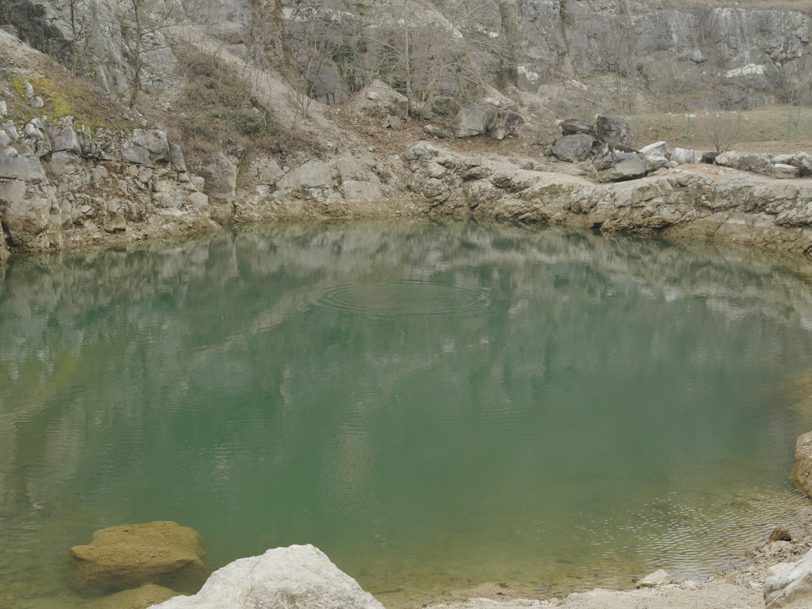

Getting here
Quarry Lane car park, Wrenlow. The gate is at the end of the lane; every wall is along one level track from there.

From the gate
- 0 mGate and car park
- 120 mGatehouse Slab3 min
- 240 mLong Wall5 min
- 330 mLedge Wall6 min
- 430 mRaven Buttress8 min
- 520 mCold Corner10 min
- 640 mFar Bay12 min
Car
Quarry Lane is single track for the last 1.2 km. Thirty spaces; on summer weekends the car park is full by 10:00. Do not park in the passing places or the farm gateway.
- All day
- £3.00
- After 15:00
- £1.50
Bus 74
From Wrenlow Market Place to Quarry Lane End, then 9 minutes up the lane.
To the quarry
- Mon–Sat
- 07:52 · 10:15 · 13:15 · 16:40
- Sun
- 10:40 · 15:10
Back to town
- Mon–Sat
- 11:02 · 14:02 · 17:27 · 19:05
- Sun
- 16:00